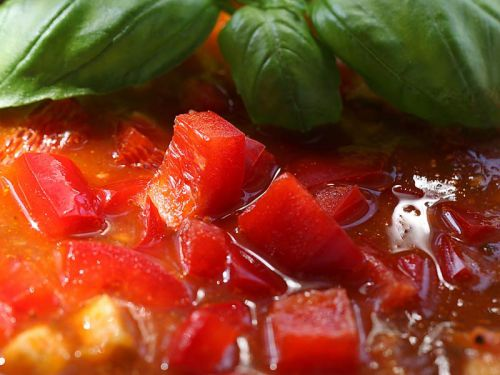
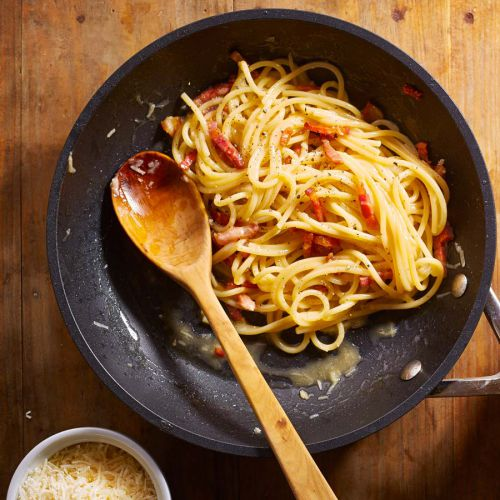
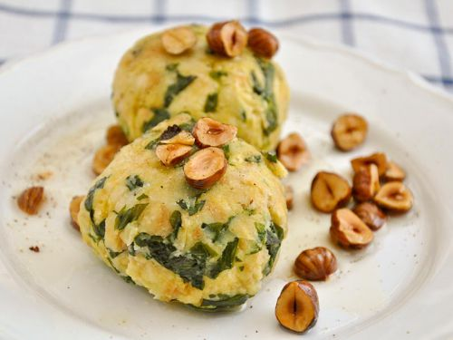
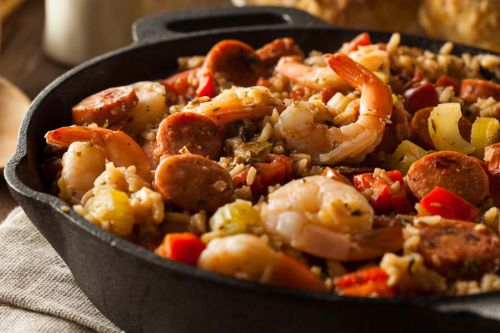

Den Backofen auf 175°C Grad/160°C Umluft) vorheizen.
Die Rosmarin-Zweigchen zupfen.
Die Kartoffeln schälen, vierteln und in großer Schüssel mit den restlichen Zutaten vermengen.
Die Kartoffelecken auf ein mit Backpapier ausgelegtes Blech legen. 25 Minuten backen, nach 20 Minuten Hitze auf 200°C /180°C Umluft erhöhen.
Hummus
Die abgetropften Kichererbsen in die kochende Brühe geben und zugedeckt 5 Min. bei milder Hitze kochen lassen.
Die Knoblauchzehen schälen und klein schneiden.
Die Tahini-Paste, den Zitronensaft und den Kreuzkümmel hinzufügen und alles fein pürieren.
Mit Salz abschmecken. Mit ein wenig Olivenöl beträufeln und mit Chilipulver bestäuben.
Dienstag

TOMATEN PAPRIKA SUPPE
ZUTATEN :
1 Glas (400 g) Tomaten-Saucen-Basis
1 rote Paprika
1 Avocado
Einige Blättchen Basilikum
Salz
So wird's gemacht
Die Tomaten-Saucen-Basis pürieren und in einem kleinen Topf erhitzen.
Die Avocado und die Paprika fein Würfeln.
Die Avocadowürfel in die kochende Tomatenbasis geben und 5 Minuten köcheln lassen.
Die Paprikawürfel zugeben und weitere 2 Minuten köcheln.
Mit Salz abschmecken, einige Basilikumblättchen darübergeben und servieren.
Mittwoch
PIZZA MIT PILZEN
ZUTATEN für 4 Portionen:
Boden:
400 g Mehl
1/2 TL Salz
1/2 Pck. Hefe
1 EL Zucker
4 EL Olivenöl
250 ml lauwarme Milch
Belag
200 g Champignons
1/2 Dose stückige Tomaten
1 mittelgroße Zwiebel
2 EL Olivenöl
2 Pakete Mozzarella
Einige Basilikumblätter
So wird's gemacht
Backofen auf maximale Temperatur (275-300°C) vorheizen.
Alle Teig-Zutaten zu einem glatten Teig verkneten und ca. 30 Minuten gehen lassen.
In der Zwischenzeit die Zwiebel schälen und fein würfeln
Die Champignons in feine Scheiben schneiden.
Den Mozzarella und die Basilikumblätter zerpflücken.
Die Zwiebelwürfel im Olivenöl andünsten, mit den Tomatenstückchen ‚ablöschen‘ und 15-20 Minuten köcheln lassen.
Mit Pfeffer und Salz würzen.
Inzwischen die Champignon-Scheiben in einer zweiten Pfanne trocken-dünsten bis sie das meiste Wasser verloren haben.
Den Teig aus-wellen, die Tomatensauce darauf verteilen.
Dann die Basilikumblättchen und die Champignons und zum Schluss die Mozzarellastückchen darüber geben
Im vorgeheizten Backofen ca. 8 – 10 Minuten backen.
Donnerstag

SPAGHETTI À LA CABONARA
ZUTATEN für 4 Portionen:
100 g Pancetta
100 g Parmesan
4 Eier
400 g Spaghettir
Salz
Pfeffer aus der Mühle
So wird's gemacht
Die Pancetta in feine Streifen schneiden und in einer Pfanne bei mittlerer Hitze 1-2 Minuten knusprig braten.
Den Parmesan reiben und die Hälfte mit den Eiern verquirlen.
Die Spaghetti in reichlich kochendem Salzwasser nach Packungsanweisung bissfest garen, dann in einem Sieb kurz abtropfen lassen.
Die Eiermischung sofort unter die heißen Spaghetti unterheben.
Die Pasta auf vorgewärmte Teller geben, mit dem restlichen Käse bestreuen und sofort servieren.
Freitag
PFIFFERLINGSTARTE
ZUTATEN für 4 Portionen:
Boden:
200 g Mehl
100 g Quark (Halbfettstufe 20 %)
1/2 PK Backpulver
4 EL Sonnenblumenöl
4 EL Vollmilch
1 TL Salz
Belag
22 Knoblauchzehen
3 Lauchzwiebeln
3 EL Butter
3 Eier
150 g saure Sahne
100 ml Milch
400 g Pfifferling
1 kl Bund Rucola in feine Streifen geschnitten
Pfeffer und Salz
Butter für die Form
So wird's gemacht
Den Backofen auf 200°C Umluft vorheizen.
Alle Teigzutaten mit der Küchenmaschine zu einem glatten Teig verarbeiten.
Den Knoblauch schälen und fein hacken. Die Lauchzwiebeln waschen, putzen, in feine Ringe schneiden. Beide in 1 EL heißer Butter andünsten.
Die Eier verquirlen, mit Creme fraiche, Milch und Knoblauch/Frühlingszwiebeln verrühren, mit Salz und Pfeffer würzen.
Die Pilze Pfifferlinge putzen, je nach Größe ganz lassen oder kleiner schneiden. In restlicher heißer Butter anbraten, salzen, pfeffern. und vom Feuer nehmen.
Den Teig auf einer leicht bemehlter Arbeitsfläche dünn ausrollen und in gebutterte Tarteformen (ca. 15×30 cm) legen, die Ränder dabei hochziehen.
Die Pilze auf dem Teig verteilen, die Eiermasse darüber gießen und die Tartes im Ofen ca. 25-30 Min. goldbraun backen.
Aus dem Ofen nehmen und mit den Rucolastreifen bestreut servieren.
Samstag

SPINAT SEMMELKNÖDEL MIT HASELNUSSBUTTER
ZUTATEN für 4 Portionen:
Haselnussbutter
100 g geschälte Haselnüsse
1 Prise Salz
Sonnenblumenöl
Knödel
6-8 Brötchen vom Vortag (600g)
1/2l Milch
6 EL Mehl
1 Bund Bärlauch
1 Zwiebel
2 EL Olivenöl
2 TL Salz
3 Eier
Pfeffer
1 Prise frisch geriebene Muskatnuss
1 TL abgeriebene unbehandelte Zitronenschale
So wird's gemacht
Haselnussbutter
Die Haselnüsse in einer Pfanne bei mittlerer Hitze anrösten.
Mit dem Salz in eine Schüssel geben und mit dem Pürierstab oder im Mixer so lange pürieren,
bis eine glatte, streichfähige Masse entsteht (evtl. mit einigen Tropfen Sonnenblumenöl verdünnen)
Knödel
1 EL Olivenöl in einer Pfanne erhitzen und die kleingeschnittene Zwiebel darin hell anrösten und beiseite stellen.
Die Brötchen zu kleinen Würfeln schneiden und in eine Schüssel geben,
1 EL Olivenöl, die Sojamilch, das Mehl, eine Prise Muskat und das Salz hinzufügen – die Masse 5 Minuten quellen lassen.
Den Bärlauch waschen und in feine Streifen schneiden.
Die Zwiebelstücke und den gehackten Bärlauch zu der Knödelmasse geben und gut durchkneten – 10 Minuten stehen lassen.
In einem Topf reichlich Salzwasser zum Kochen bringen.
Die Knödelmasse mit feuchten Händen gleich große Knödel formen.
Die Knödel in das siedende Wasser einlegen und ca. 15 Minuten bei geringer Hitze ziehen lassen (das Wasser darf nicht kochen) die Knödel aus dem Wasser heben und noch heiß servieren.
Sonntag

SÜDSTAATEN PAELLA
ZUTATEN für 4 Portionen:
1 großes Hähnchenbrustfilet
15 Garnelen, oder Kaisergranat
20 Scheiben Chorizo
1 grüne Paprikaschote
3 Stangen Staudensellerie
2 kleine Zwiebeln
1 El Zucker
2 Knoblauchzehen
1 gehäufte Tl Cajun Spices
1 Tasse Parboiled Reis
1 Tassen Hühnerbrühe
2 Lorbeerblätter
Gehackte Petersilie und Frühlingszwiebeln
So wird's gemacht
Das Hähnchenbrustfilet in Mundgerechte Stücke schneiden.
Die Zwiebeln und den Knoblauch fein würfeln.
Die Paprikaschoten und den Sellerie grob würfeln.
Die Chorizoscheiben in wenig Öl kross anbraten, Wurst aus der Pfanne nehmen und die gewürfelte Hähnchenbrust in dem ausgebratenen Wurstfett goldbraun braten.
Hähnchen ebenfalls beiseite stellen.
Die kleingeschnittenen Zwiebeln und den Sellerie mit etwas Zucker in der selben Pfanne hellbraun braten.
Die kleingeschnittene Paprika hinzu geben und ebenfalls 5-10 Minuten Farbe annehmen lassen.
Den gehackten Knoblauch, die Cajun Spice Mischung den Reis, Huhn und Lorbeer hinzugeben.
Die Brühe aufgießen und alles etwa 25 Minuten leicht köcheln lassen, eventuell Wasser nachgießen.
Wenn der Reis fast gar ist, die Chorizo und die Meeresfrüchte zugeben. Weitere 5 Minuten köcheln und heiß servieren.